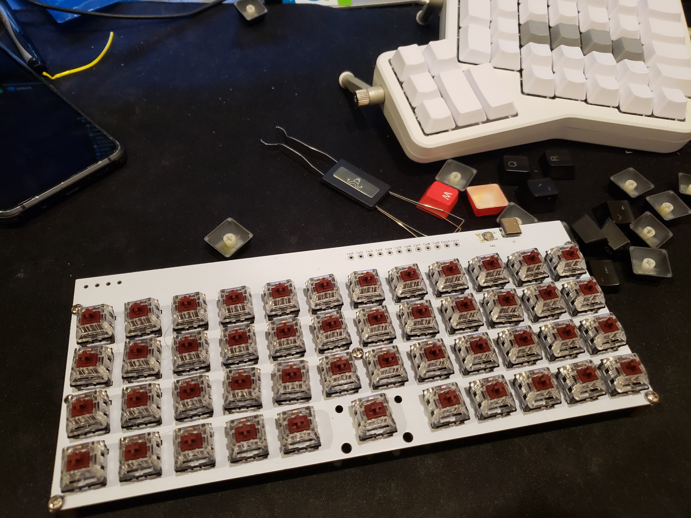
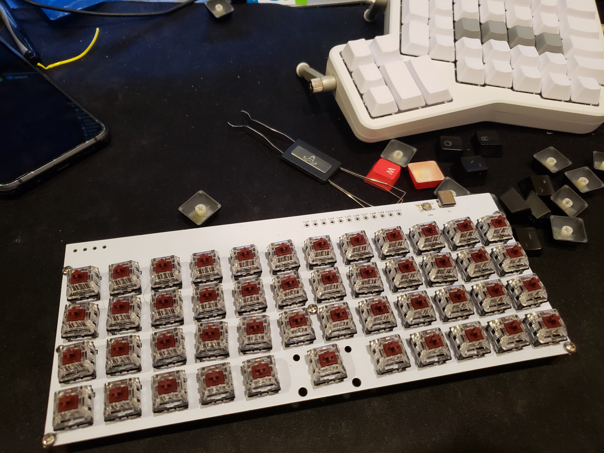
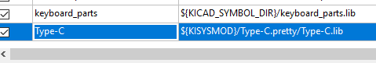
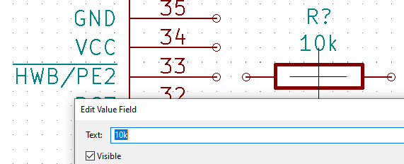
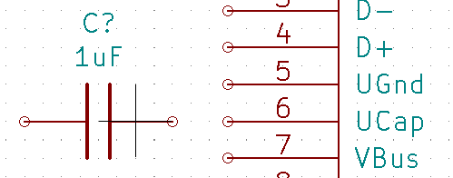
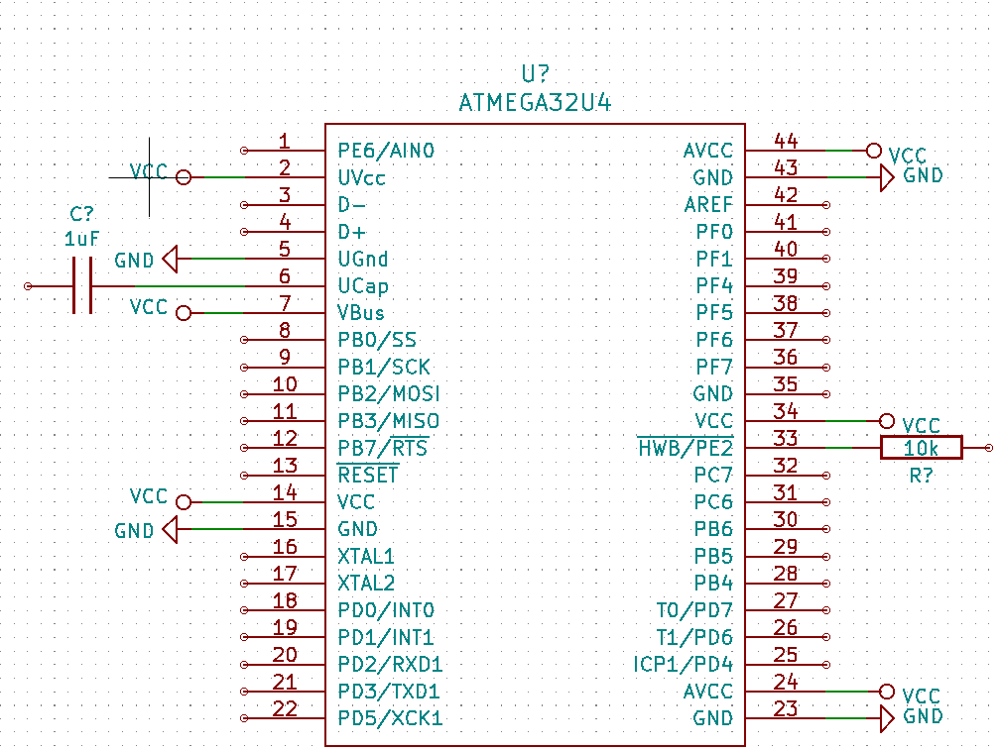
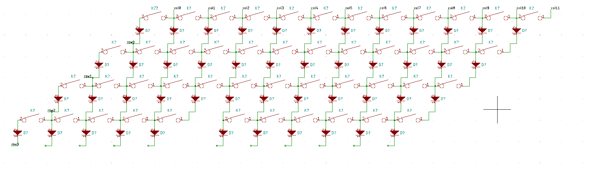
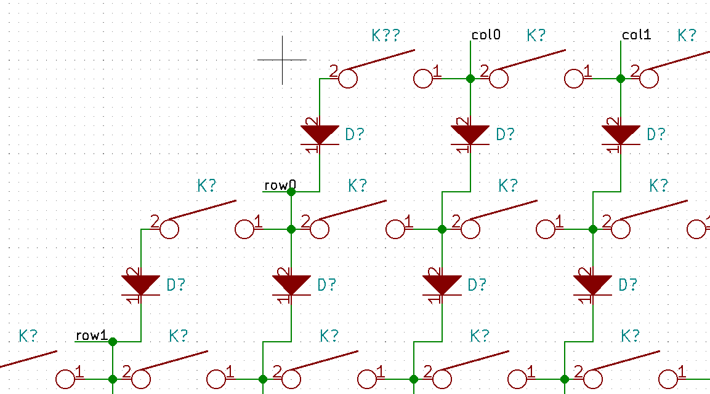
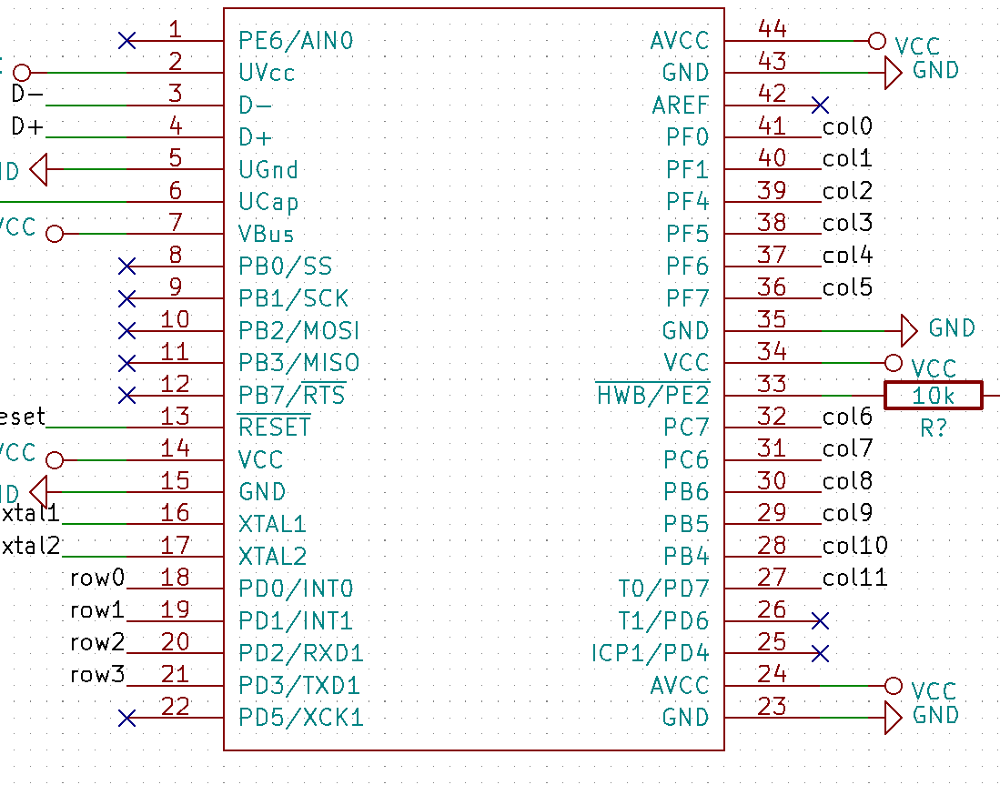
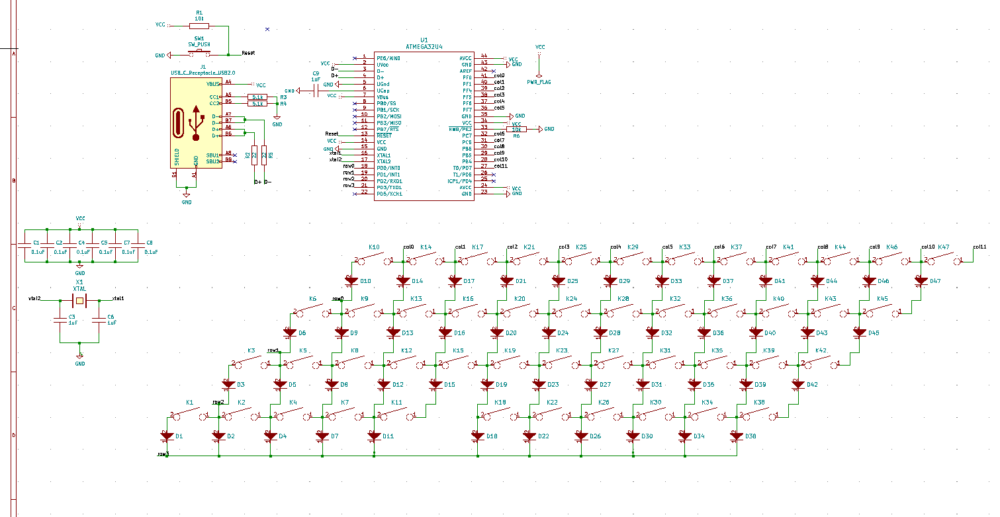

Revision 2 Green, Revision 1 White, Back top, Front bottom
Revision 2 Green, Revision 1 White, Back top, Front bottomCustom design 47 key ortholinear keyboard with PCB, and Atmega32u4 Microcontroller
Revision 2 Green, Revision 1 White, Back top, Front bottom
 

Designing a custom mechanical keyboard PCB using KiCad. The following was based on Ruiqi Mao's Tutorial
Download and install Kicad from https://kicad-pcb.org/
Clone the following two repositories (or download zip and extract):
keyboard_parts.pretty from https://github.com/tmk/keyboard_parts.prettykeebs.pretty from https://github.com/egladman/keebs.prettyType-C.pretty from https://github.com/ai03-2725/Type-C.prettykicad_lib_tmk.lib https://github.com/tmk/kicad_lib_tmk
Open Kicad > Preferences > Manage Footprint Libraries
Global Libraries tab, press the folder icon to Add existing library to tablekeebs.pretty and press OK
keyboard_parts.pretty and Type-C.prettyGlobal Libraries tab:

Back in the Kicad Menu, Preferences > Mange Symbol Libraries
Global Libraries tab, press the folder icon to Add existing library to tablekicad_lib_tmk and select keyboard_parts.libType-C.pretty and select Type-C.lib
In Kicad: file > New > New Project
tutorial_keyboard)Savetutorial_keyboard.kicad_pcb: The PCB filetutorial_keyboard.pro: The project file, we will not be using thistutorial_keyboard.sch: The schematic file
Click on the Schematic Layout Editor button
Because this schematic will be large, increase the paper size by going to file > Page Settings... then selecting the C page size
To place a part, press the Place symbol button on the right side
For the microcontroller:
Place symbol and click on the page > expand keybord_parts > select ATMEGA32U4 > press OK > Click on the sheet to place the component

Place the following components as required by the datasheet
HWB/PE2
Place symbol > keyboard_parts > R > Ok
r before placing the component, or while hovering over the component after placing to rotate ite to Edit Value FieldText field to say 10k
UCap
place symbol > keyboard_parts > C > Ok1uF


Connect Vcc and GND
Place power port > click on the pagepower library and select > VCC > OkAVCC
Place wire iconAVCC and make a connection to the VCC flag
| Pin | Name |
|---|---|
| 2 | UVcc |
| 7 | VBus |
| 14 | VCC |
| 24 | AVcc |
| 34 | VCC |
| 44 | AVcc |
VCCVCC in the schematic do not need to be connected togetherVCC to a power flag
Place symbol > Search for PWR_FLAG > PWR_FLAGPWR_FLAG to VCC

Place power port > GND (Power flag, ground from the spower` library)
GND on the following pins:
| Pin | Name |
|---|---|
| 5 | UGND |
| 15 | GND |
| 23 | GND |
| 35 | GND |
| 43 | GND |
GNDGND
If there are any overlapping components or labels, press m over the component/label to move it somewhere else
Reset Circuit
RESET to VCC)Place symbol > keyboard_parts > SW_PUSHHigh (5V) normally, and ground when pushed to reset the microcontrollerGNDVCC -> 10 k
Place net labelResetReset on the RESET pin (pin 13) of the microcontroller
USB Type-C Circuit
Place symbol > Connector > USB_C_Receptacle_USB2.0| Receptacle Port | Connection |
|---|---|
VBUS |
VCC |
CC1 |
5.1 kGND |
CC2 |
5.1 kGND |
D- |
Connect both D- pins through a 22 D- |
D+ |
Connect both D+ pins through a 22 D+ |
SBU1 |
Leave unconnected |
SBU2 |
Leave unconnected |
GND |
GND |
SHIELD |
GND |

D- (pin 3) to the D- net and D+ (pin 4) to the D+ net

Crystal Oscillator Circuit
Place symbol > keyboard_parts > XTALXTAL with the other side going off to GNDXTAL to a net called xtal1 and the other to a net called xtal2xtal1 net to XTAL1 (pin 16) and xtal2 to XTAL2 (pin 17) on the microcontroller

Placing the keys

Place symbol > keyboard_parts > KEYSWPlace symbol > keyboard_parts > D2 pin on the KEYSW on to the 2 pin on the diode Orientation on the diode is extremely important
col0 to col11row0 to row3

PAX, PBX, PCX, or PDX) these can be changed later to make it easier to route the PCB

Bypass Capacitors
VCC nets and GND, watch this video to learn moreMark all unconnected ports
Place no connection flagSBU1 and SBU2 on the USB C receptacle
Annotate the schematic to give components names
Tools > Annotate SchematicAnnotateCloseRun a Design Rules Check to make sure there are no errors in the circuit
Perform electrical rules check > RunVCC or GND not being driven, you can move on
0805 surface mount package. If you do not feel comfortable surface mounting components, you will have to heavily modify the PCB layout.Tools > Assign Footprints...
| Components | Library | Footprint |
|---|---|---|
| All Capacitors | Capacitor_SMD |
Capacitor_SMD:C_0805_2012Metric |
| All Diodes | Diode_SMD |
Diode_SMD:D_0805_2012Metric |
| USB C Receptacle | Type-C |
Type-C:USB_C_GCT_USB4085 |
All KEYSW EXCEPT FOR THE SPACE BAR |
keebs |
keebs:Mx_Alps_100 |
| Space Bar (sixth key in on the bottom row) | keebs |
keebs:Mx_Alps_200 |
| All Resistors | Resistor_SMD |
Resistor_SMD:R_0805_2012Metric |
SW_PUSH |
Button_Switch_SMD |
Button_Switch_SMD:SW_SPST_TL3342 |
ATMEGA32U4 |
Package_QFP |
Package_QFP:TQFP-44_10x10mm_P0.8mm |
XTAL |
keyboard_parts |
keyboard_parts:XTAL_HC_49_TH |


OKGrid dropdown menu on the topEdit User GridSize X and Size Y to 0.254

PCB Layout EditorTools > Update PCB from SchematicLayers Manager > Items > Uncheck the box next to Ratsnest
ctrl + f to search for the key annotations+ sign between all groups for 4 adjacent keysFollow the annotations from your schematic to put the keys in the correct order
f
ratsnest may be helpful for this part

ratsnest turned on, move the location of rows and cols on your microcontroller to reduce the number of ratsnests that overlapTools > Update PCB From SchematicF.CU for components on the frontB.CU for components on the backRoute tracksGND nets, those will all be taken care of in the end
R to rotate the component if that makes it easierv to insert a via between the front and the back to switch layers
WIP